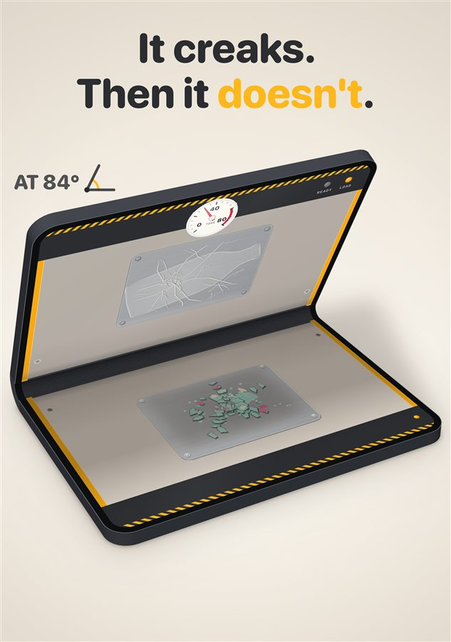
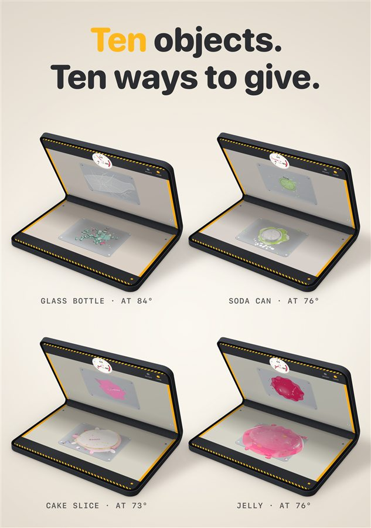
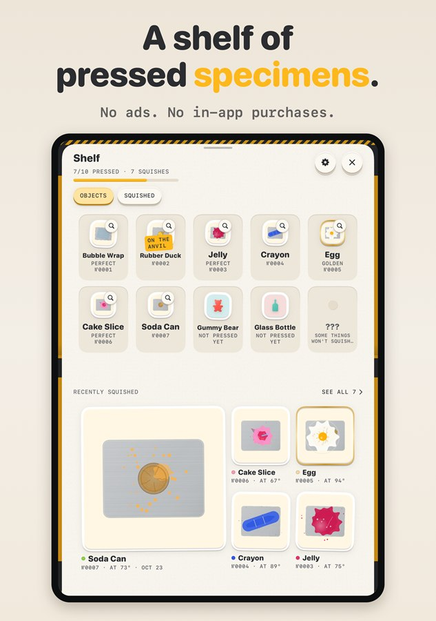
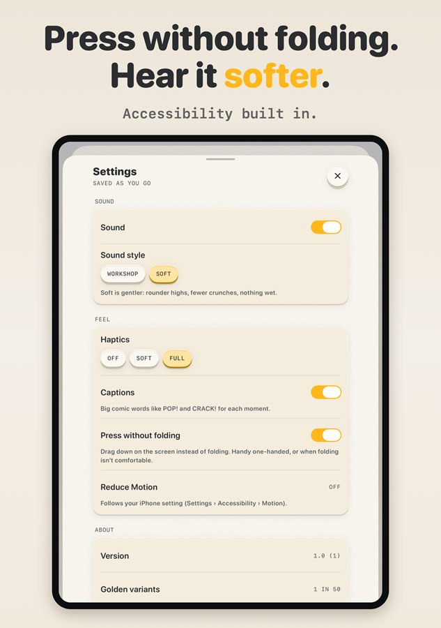
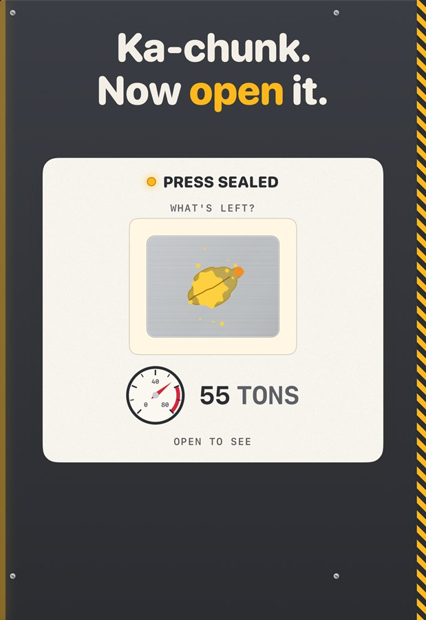
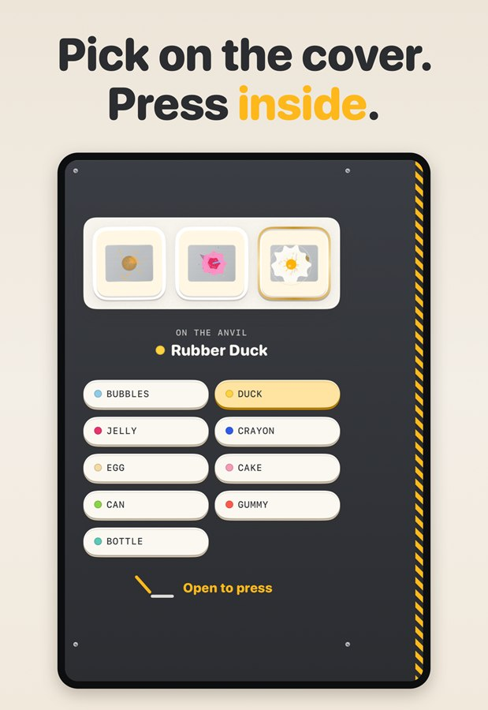
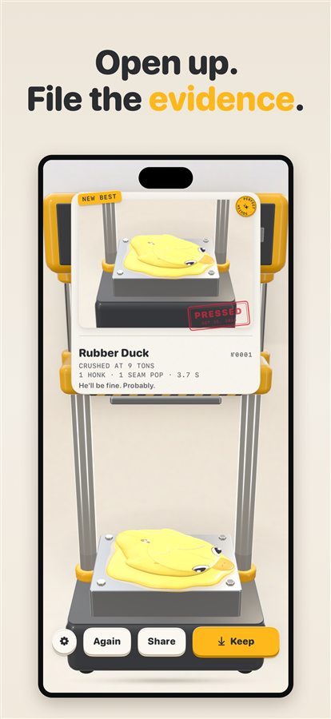
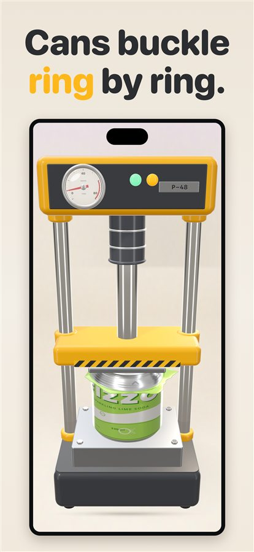
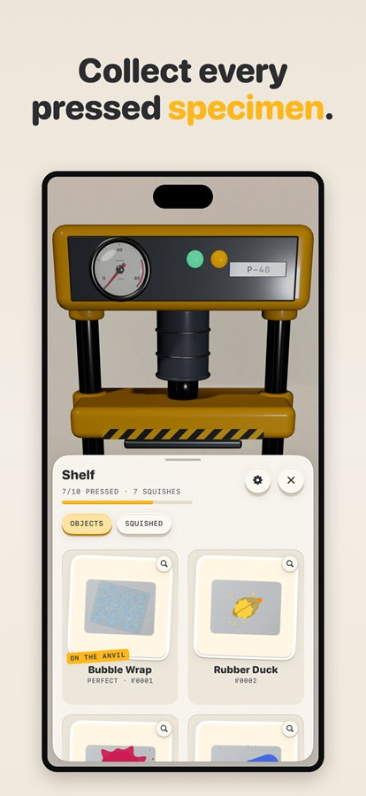
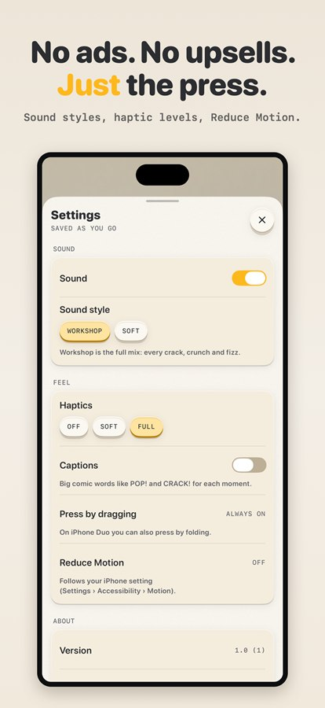

Press kit
Squish: Fold-to-Crush Press
No embargo. Everything on this page is free to use now, with a link to the App Store listing once it's live. Need something else, such as a different format? Get in touch.
In one paragraph
Squish turns your £2,000 phone into a hydraulic press. Pick a virtual object (bubble wrap, a rubber duck, an egg, a glass bottle) and it sits on the lower half of the iPhone Duo's inner screen. Push the top half down slowly and the press follows your hand, degree by degree. You see, hear and feel the object strain, crack and give way, with every sound and haptic landing together. Close the phone fully for a heavy ka-chunk, then open it again to find your object flattened, stamped and filed as a pressed specimen in your collection. It also works on every other iPhone: just drag the press down. Squish costs £2.99 / $2.99, with no ads, no in-app purchases, no timers and no data collected.
One-liner: Your £2,000 phone is now a hydraulic press. Pick something on screen, close it slowly, and feel it give.
Fact sheet
| Name | Squish (App Store: “Squish: Fold-to-Crush Press”) |
|---|---|
| Developer | Squish, an independent developer (GitHub pravegm) |
| Release date | Tuesday 24 November 2026, on the App Store |
| Platform | iPhone, iOS 18 or later. Designed for iPhone Duo, where the hinge drives the press; every other iPhone presses by dragging |
| Price | £2.99 / $2.99, one-off. No ads, no in-app purchases |
| Launch content | 10 objects: Bubble Wrap, Rubber Duck, Jelly, Crayon, Egg, Cake Slice, Soda Can, Gummy Bear, Glass Bottle, and one secret |
| Features | Hinge-driven analogue press · real-time haptics and sound · pressed-specimen shelf · Perfect Squish and Golden (1 in 50) variants · cover-display “Press sealed” card · share clip and image · Game Center achievements |
| Accessibility | Press without folding · VoiceOver · Reduce Motion · Soft sound style · haptics Off, Soft or Full · on-screen captions for big moments |
| Privacy | Data Not Collected. No accounts, no tracking, no third-party SDKs, no network calls |
| Language | English |
| Links | Website: pravegm.github.io/squish · Support: /support · Full-size assets: press-kit release |
| Press contact | Open a request on GitHub (public) |
Key features
- The hinge is the hand. Closing the phone drives the press continuously, not as an open/closed switch. Stop halfway and the press stops. Ease off and the ram lifts.
- Every object fails its own way. Bubble wrap pops bubble by bubble, the duck's squeak climbs with pressure, the soda can buckles ring by ring, and the glass bottle creaks for a long time before it lets go.
- You feel it. A haptic strain swells as you close, and the heaviest jolts are saved for the break and the ka-chunk.
- Ka-chunk, then the reveal. Closing the phone seals the press, and the cover display shows “Press sealed” with the tonnage. Reopen to find your specimen stamped PRESSED.
- A collection that rewards care, not speed. Slow, steady closes earn a quiet Perfect Squish. Slams still work but earn nothing. About one press in 50 comes out Golden.
- Never a slot machine. No currency, energy, streaks, ads or purchases.
- For every iPhone. The P-48 drag press runs the same engine on any iPhone, and Press without folding brings it to the Duo as an accessibility option.
Icon and screenshots
The images below are web-sized previews; tap one to open it. Full-resolution PNGs (icon 1024 × 1024, iPhone Duo inner 2007 × 2853, cover display 1398 × 2034, iPhone 1320 × 2868) are on the press-kit release.

App icon
iPhone Duo, inner display









iPhone Duo, cover display




Every other iPhone








